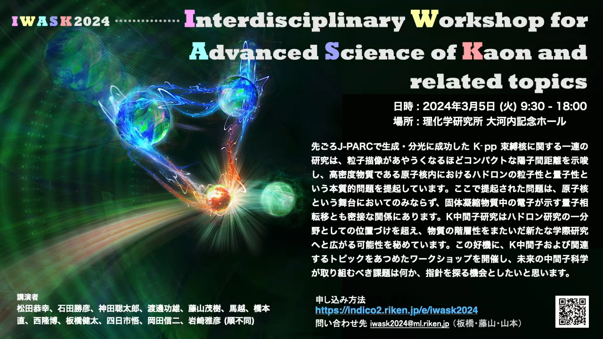

領域横断型研究会
―
IWASK2024
― Interdisciplinary Workshop for Advanced Science of
Kaon and related topics 2024 (IWASK2024) ―
|
場所: 理化学研究所・大河内記念ホール
|
|
日時: 2024年3月5日 |
|
Location:
Okochi ( Oːkoːchi ) Memorial Hall, RIKEN |
|
Date:
March 5, 2024 |
趣旨：先ごろJ-PARCで生成・分光に成功したK-pp束縛核に関する一連の研究は、粒子描像があやうくなるほどコンパクトな陽子間距離を示唆し、高密度物質である原子核内におけるハドロンの粒子性と量子性という本質的問題を提起しています。ここで提起された問題は、原子核という舞台においてのみならず、固体凝縮物質中の電子が示す量子相転移とも密接な関係にあります。K中間子研究はハドロン研究の一分野としての位置づけを超え、物質の階層性をまたいだ新たな学際研究へと広がる可能性を秘めています。この好機に、K中間子および関連するトピックをあつめたワークショップを開催し、未来の中間子科学が取り組むべき課題は何か、指針を探る機会としたいと思います。
Objective: A series of experimental spectroscopies on the Kaonic
bound nuclear state led to the recent success in observing the K-pp
state at J-PARC, which suggests an
inter-nucleon distance so compact that it may jeopardize the particle picture
in nuclei, raising fundamental questions about the particle and quantum nature
of hadrons in high-density matter. The problems posed here are not only
relevant to the stage of nuclei but also closely related to quantum phase
transitions in a condensed matter, indicating a tight connection between these
fields. Research on K mesons transcends
its position as a subfield of hadron research, holding the potential to expand
into new interdisciplinary studies spanning the hierarchy of matters. Seizing
this opportunity, we propose to hold a workshop focusing on K mesons and
related topics to explore the challenges that future meson science should
tackle, guiding future research directions.
ワークショップ メモリー ― Workshop
Memorial Gallery
ワークショップ ポスター ・ Workshop Poster :

研究会フォトストリーム再生ページ ・ Workshop Photo Stream Play Page
岩崎プレゼンテーション再生ページ ・ Iwasaki’s Presentation View Page
懇親会集合写真 ・ Group Photo at the
Social Dinner:

研究会写真集 [参加者限定] ・ Workshop Photos [conference attendees
only]
まとめたものは 研究会フォトストリーム再生ページ でご覧になれます。ダウンロードは参加者限定でお願いします。
Highlights are given in the Workshop Photo Stream Play Page.
Please
limit the use of the link to conference attendees only.
研究会プログラム & 発表ファイル ― Program
& Presentation Files:
|
Dr.
Shigeki FUJIYAMA |
09:20
- 09:30 |
|
|
Prof.
Yasuyuki MATSUDA |
09:30
- 09:55 |
|
|
Dr.
Katsuhiko ISHIDA |
09:55
- 10:20 |
|
|
Coffee
break |
― |
10:20
- 10:50 |
|
Dr. Sohtaro Kanda |
10:50
- 11:15 |
|
|
Dr.
Shigeki Fujiyama |
11:15
- 11:40 |
|
|
Lunch
break |
― |
11:40
- 13:00 |
|
Dr.
Yue MA |
13:00
- 13:25 |
|
|
Dr.
Tadashi HASHIMOTO |
13:25
- 13:50 |
|
|
Dr.
Takahiro NISHI |
Precision
Spectroscopy of Pionic Atom at RIBF and Chiral Symmetry in Medium |
13:50
- 14:15 |
|
Coffee
break |
― |
14:15
- 14:45 |
|
Dr.
Kenta ITAHASHI |
14:45
- 15:10 |
|
|
Dr.
Satoshi YOKKAICHI |
15:10
- 15:35 |
|
|
Prof.
Shinji OKADA |
15:35
- 16:00 |
|
|
Coffee
break |
― |
16:00
- 16:30 |
|
Dr.
Masahiko IWASAKI |
Physical
Research Conducted at RIKEN ー
as a Chief Scientist ー Presentation
Movie (in Japanese)
|
16:30
- 18:00 |
|
懇親会 / Social Dinner |
岩崎主任研究員を囲んで / ― An
Evening with M. Iwasaki ― |
18:30
- 20:30 |
参加登録ページ
―
Registration Information:
理研 / RIKEN indico server: https://indico2.riken.jp/e/iwask2024
日時 2024年3月5日(金) / Friday, February 9, 2024
会議は終了しました: / The
Workshop has Ended.
オーガナイザー ― Organizer: 板橋健太・藤山茂樹・山本光枝
連絡先 / Contact: iwask2024＠ml.riken.jp